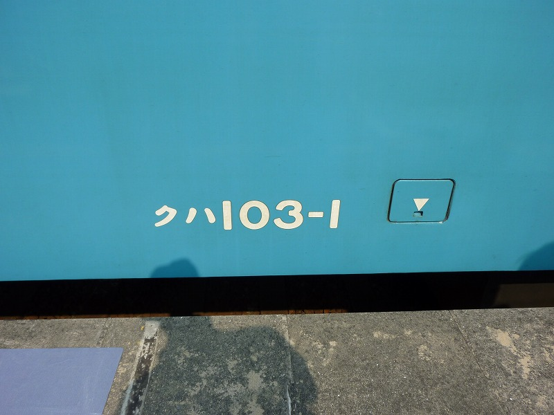

仁徳陵散策のため天満からJR。たまたま関空快速が着ました。よっしゃこれで三国ヶ丘へ
三国ヶ丘の手前、堺市駅の同じホームに青い車両が停まっていました。
友「いや～あれまたすんごい古い車両だよなあ。いやあ古い。」
夫「大阪側の番号見えなかったな。あれで和歌山側が２だったら１なんだけどなあ・・・・・・」
追い越す時に先頭の車両番号を確認する３人
一同「うわっ！２！！」
車内ガラガラなのに先頭車両のガブ席で立ち、１とか２とか意味不明な会話をする３人は
三国ヶ丘から仁徳陵に行く予定を取りやめ、１駅だけ１に乗ることにしました（友人希望）
ホームに入ってきた２。
ちゅーかさ、あたし、堺市駅にこいつ停まってても、和歌山方面か大阪方面のどっちいくかわかんなかったんですけどぉ。
だって環状線だったら同じホームで内回りと外回りあるやん。。とかいって夫ににらまれる妻。
はい、１です。友達いると「カンコウキャクデス」って感じで撮影もへっちゃらな妻。
とっても嬉しそうな二人。
まさに網棚
友「この扇風機だよなあ、コレ」はあ、そーですか。ほな撮影。
あっという間に百舌鳥に到着ここから仁徳陵に向います。

ああこんな写真とられちゃったよ。お友達恥ずかしくないんでしょうか。
ホームで１を見送ります。
あ、全然恥ずかしくないんですね。４５歳、ニッコリⅤサインです。
ちなみにこの日のコースは以下の通り
JR天満→103-1堪能→仁徳陵南端散策→堺市役所展望ロビーから仁徳陵を上から見学→
宿院近くの商店街散策（防空壕見学させてもらった）→「ちく満」でぬくいソバを食べる→
阪堺電車で東玉出下車→玉出商店街見学（これまたDEEP）→岸里玉出から汐見橋線→これが大阪かと友人唸る→汐見橋下車→
地下鉄で大阪城→大阪城内散策→水上バスで道頓堀へ（大川→東横堀→道頓堀）→水門通過など友人大喜び→
地下鉄で天六（天六止まりで阪急電車の車両？ほー、使っていいって取り決めあるんだろうなーと
誰も何も説明してないのに物事を理解する友達。）→南下してマンション入口の甘味処で冷やしコーヒークリーム入り→
家でシャワー＆小休止→近所の下町てんぷら屋で紅しょうが天ぷらなどを堪能→埼玉へ
マンション前の数メートル以外は行きも帰りも同じ道を通らなかったのもご満悦のようでした。
ひさしぶりに観光しました。おもろかった～・・・
都島